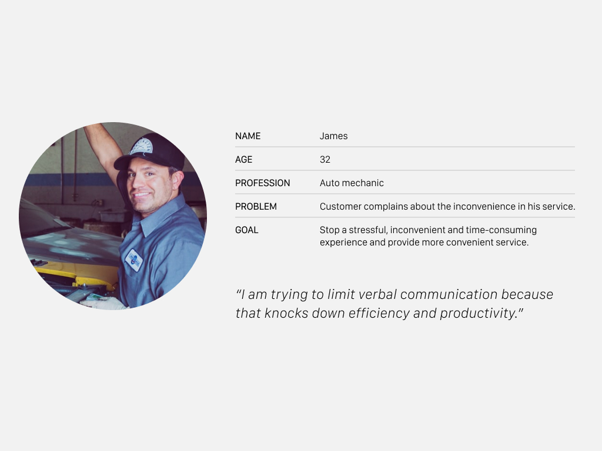
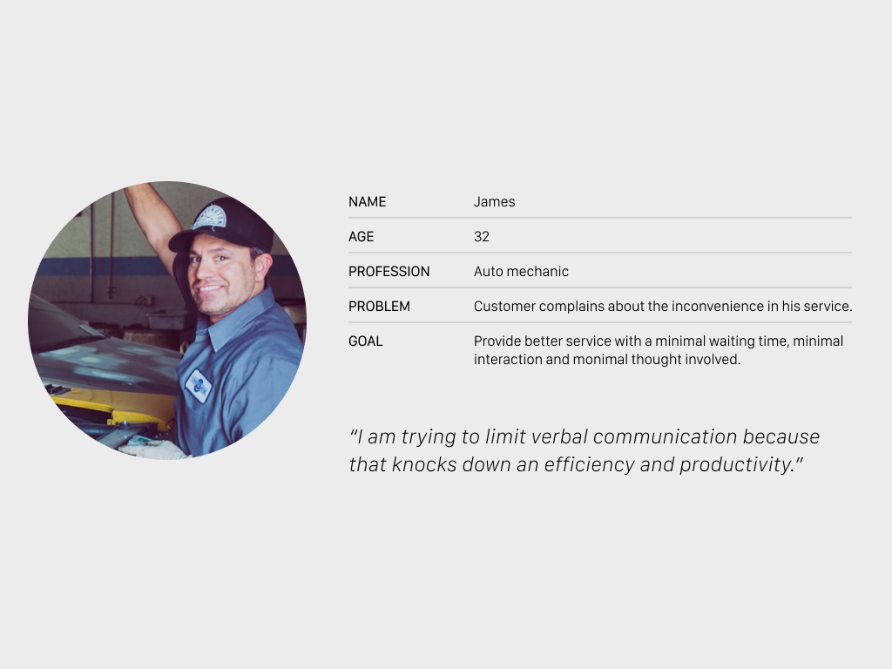
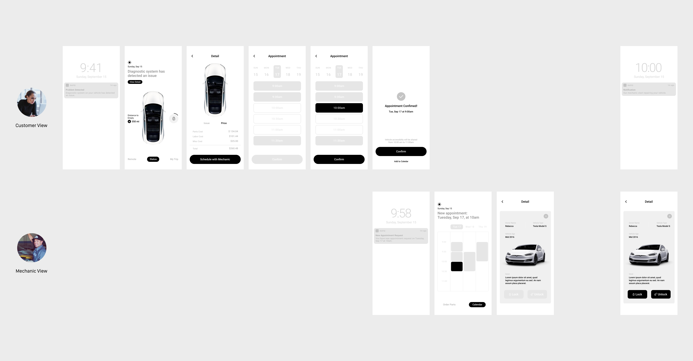
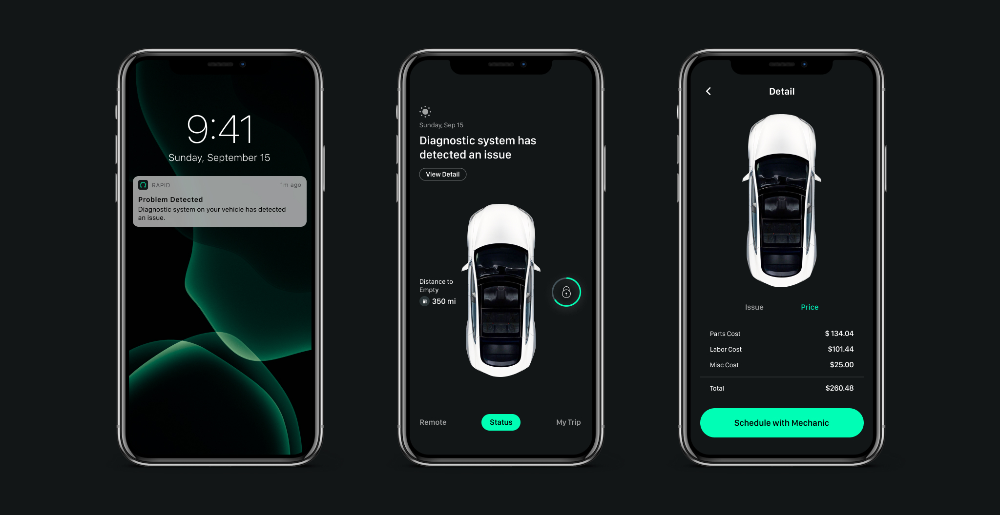
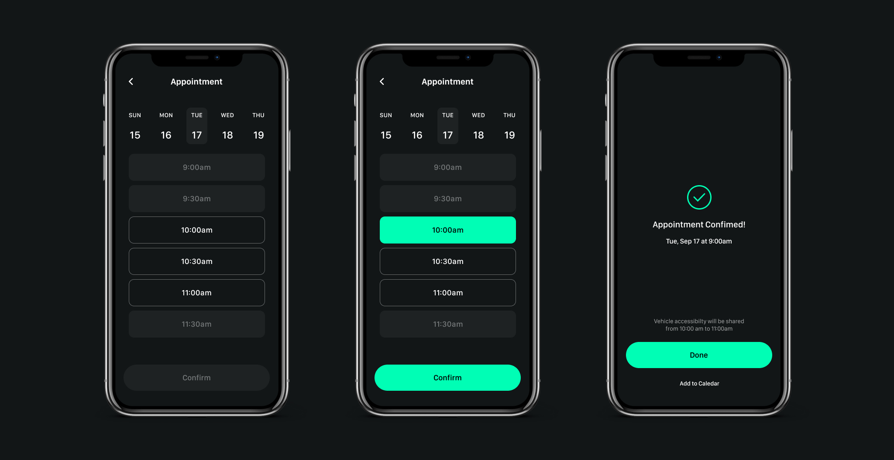
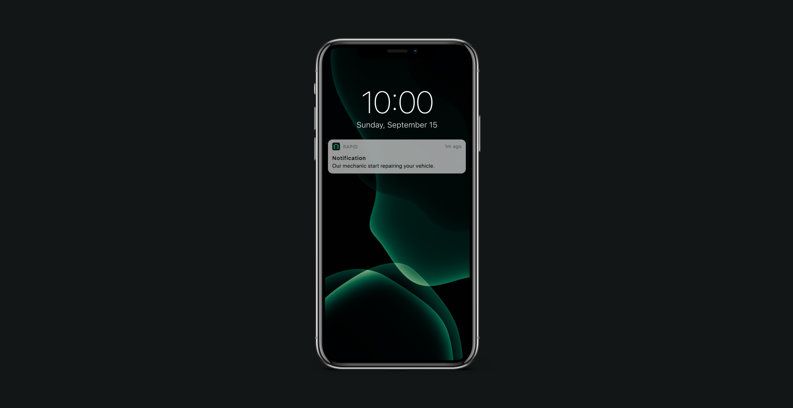
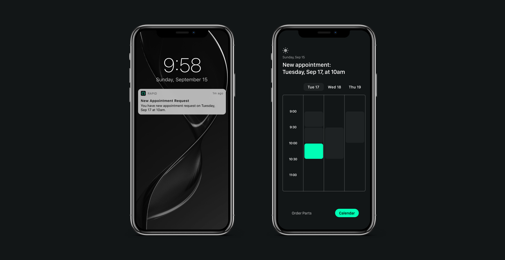
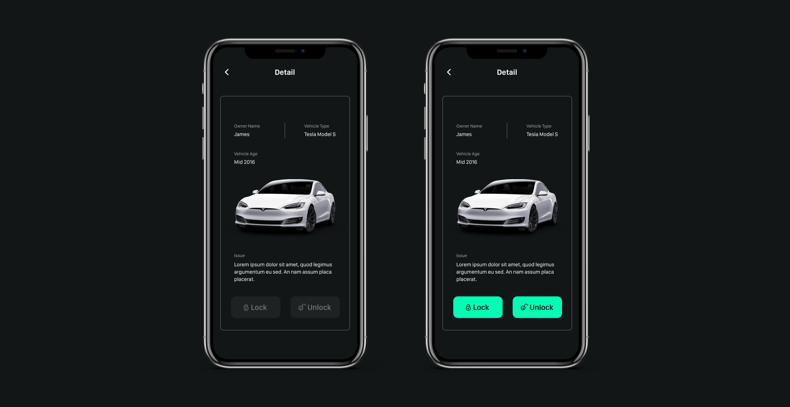

Insight
Modern technology has created a trend of having what you want instantly. Now people want
everything to be automated, real quick and as convenient as possible. To keep up with customers'
demand and outside competition, repair shops and mechanics should offer state-of-the-art services
that utilizes technology.
Persona


Idea
Rapid uses AI to anticipate car troubles, contact owners and mechanics, schedule appointments
for repairs and maintenance and share vehicle acessibility when necessary. The app focuses on
reducing unnecessary hassle between customer and mechanic and to offer more instant and convenient
mechanic experience with minimal waiting time, interaction and thought involved.
Wireframe

Customer View
Get notified & View Detail
Artificial Intelligence detects car problem before it occurs and notify the owner.
The car owner can see the detailed information and decide whether or not to book an appointment with the mechanic.

Book an appointment
Should car owners wish to make repairs, they can schedule an appointment with a mechanic at the best available time.

Track Process
When a mechanic troubleshoots your vehicle and starts the repair, our app sends you a notification which allows the car owner to monitor the repair process and progress.

Mechanic View
Receive a request
When an appointment is confirmed, our app sends the mechanic an appointment request notification. Mechanics can see the detailed information of the vehicle by tapping the scheduled time on the calendar.

Receive accessibility at the appointed time
The accessibility to the car will be shared at the appointed time, provide easy access to the mechanic for pick up/ drop off or repair services.
